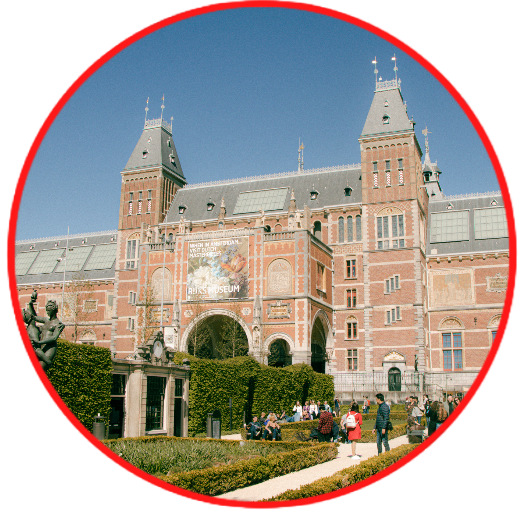

Yesterday's challenge:
Today we challenge you to go to Rijksmuseum, this museum is not only beautifull on the outside but also on the inside.
Rijksmuseum is the national museum of the Netherlands dedicated to Dutch arts and history and is located in Amsterdam. The Rijksmuseum was founded in The Hague on 19 November 1798 and moved to Amsterdam in 1808, where it was first located in the Royal Palace and later in the Trippenhuis. The museum has on display 8,000 objects of art and history, from their total collection of 1 million objects from the years 1200-2000, among which are some masterpieces by Rembrandt, Frans Hals, and Johannes Vermeer. The museum also has a small Asian collection, which is on display in the Asian pavilion.